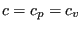

Next: Sluice Gate
Up: Fluid Section Types: Open
Previous: Fluid Section Types: Open
Contents
Figure 122:
Channel geometry
|
The straight channel is characterized by a trapezoid cross section, the bottom
width of which can be defined to vary linearly. This is illustrated in Figure
122. The following constants have to be specified on the
line beneath the *FLUID SECTION,TYPE=CHANNEL STRAIGHT card:
- the width

- the slope
 (if
 the slope is calculated from the
coordinates of the end nodes belonging to the element)
the slope is calculated from the
coordinates of the end nodes belonging to the element)
- the length

- the trapezoid angle

- the grain diameter
 for the White-Colebrook law or the Manning
constant
for the White-Colebrook law or the Manning
constant  for the Manning law (in the latter case the user has to specify
the parameter MANNING on the *FLUID SECTION card)
for the Manning law (in the latter case the user has to specify
the parameter MANNING on the *FLUID SECTION card)
- the number of the upstream reference element
Example files: channel1, chanson1.
guido dhondt
2018-12-15